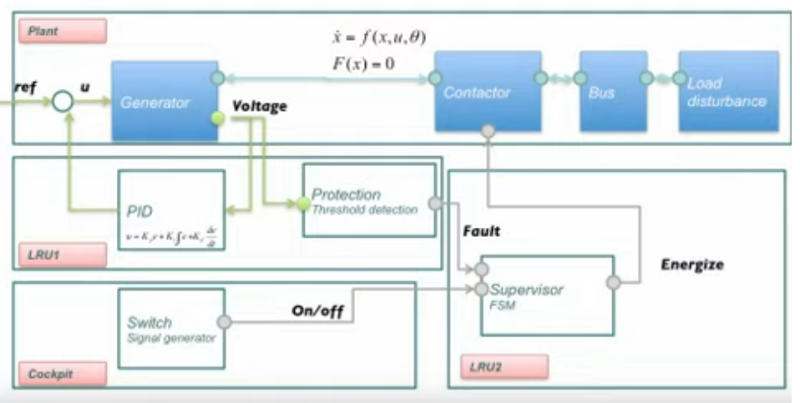

Electronics <<
Previous Next >> 深度學習
虛實整合系統設計
Cyber-physical integration system design
https://www.geeksforgeeks.org/introduction-to-cyber-physical-system/
The Challenges of Cyber-Physical Systems (pdf)
Machine Learning for Cyber-Physical Systems
Centennial Special Issue of IEEE
Cyber-physical system (CPS) represents an important and growing field that links the computer, communications, and controls areas with the physical world in such areas as aerospace, medical, automotive, energy as well as other areas. In this section, composed of two papers, the biggest
challenges of CPS are explored including their inherent complexity, which makes it more difficult to design and develop software systems.
The first paper, Cyber-physical systems: A perspective at the centennial [by Kim and Kumar] surveys cyber-physical systems and the potential benefits of the convergence of computing, communications, and control technologies for developing next-generation engineered systems. The second paper, A cyber-physical future [by Rajkumar] looks at the future technical challenges in this field.
Syllabus:
1 虛實系統簡介 (Introduction to Cyber-physical Systems)
1.1 網路背景 (Background on Networking)
1.2 資訊安全 (Information Security)
1.3 系統控制原理 (Control Systems Theory)
2 跨網路運算 (Computing across Networks)
2.1 網路協定層 (Networks Protocol Layers)
2.2 網路服務模型 (Network Service Models)
2.3 OSI 與網際網路協定 (OSI and Internet Protocols)
3 系統整合控制 (System Integration Control)
3.1 系統整合原理 (System Integration Theory)
3.2 系統狀態方程式 (System State-space Equations)
3.3 回授系統與控制 (Feedback System and Control)
4 系統通訊 (System Communication)
4.1 Websockets 與雙工通訊 (Websockets and Duplex Communication)
4.2 高速同步併發通訊 (ZeroMQ Communication)
4.3 通訊安全 (Communication Security)
5 智能系統 (Smart Systems)
5.1 遠距與跨度裝置 (Far Reaching and Span Devices)
5.2 智能汽車系統 (Smart Vehicle Systems)
5.3 智能建築系統 (Smart Buildings Systems)
6 移動運算與課程總結 (Mobile Computing and Course Summary)
References:
https://youtu.be/pdhyniSDhZk

Generator (發電機) - Electromechanical System
Contactor (接觸器) - Mechanical System
Bus (匯流排) - Electrical System
PID - Control System
Supervisor - Software System
Switch - Human Computer Interface
Switch to Supervisor - Communication Network
https://youtu.be/0fG22fQMoW4
https://youtu.be/nhJsppT45_0
CS 6263: Intro to Cyber Physical Systems Security Course Videos
CS 7639: Cyber-Physical Design and Analysis
https://github.com/thiagoralves/OpenPLC_v3
https://github.com/thiagoralves/OpenPLC_Editor
OpenPLC based control system testbed for PLC whitelisting system
https://openplcproject.com/
http://hades.mech.northwestern.edu/images/e/e3/EmbeddedComputingMechatronicsSampleChapters.pdf
Foundations of Robotics: A Multidisciplinary Approach with Python and ROS
Electronics <<
Previous Next >> 深度學習